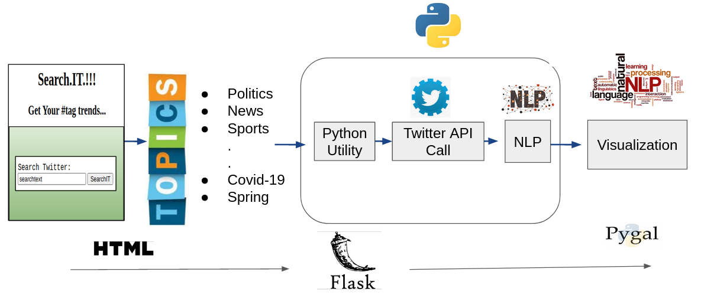

Architecture¶
Process Flow:¶
The tool is a python powered web-based application built using Flask and tweepy packages.User uses Web Interface to search tweets .The tool will take the text from the forms with the click of submit button. In the backend, flask uses @app.route decorators. This is used for app routing to map the specific URL with the associated functions intended to perform some task. If POST request is received, the data is fetched from the FORM tags within index.html and redirected into python back end using flask request methods. The data is processed through a twitter custom engine .The aggregated data from the twitter engine is passed into the dashboard function, which is @app.route decorated function.The data is deserialized and converted into a list. Aggregated data is loaded into a pygal bar chart .The chart is rendered on dashboard.html using the flask render_template function. Finally, the aggregated information is available for the searched string to the end-users.
Steps involved :¶
Cookiecutter project starter template used to build initial project
Used Pipenv Environment to integrate and run the project modules
Used Flask to integrate the HTML based web pages with the website
Flask Passes search string to twitter cursor using custom .website.twitter_searcher module that cleans and aggregates that data
NLTK library used for data preprocessing, stop word removals.
Data is aggregated and then sent into the dashboard function.
Pygal is employed to generate horizontal bar charts
Rendered plots back into dashboard.html using flask render_template function